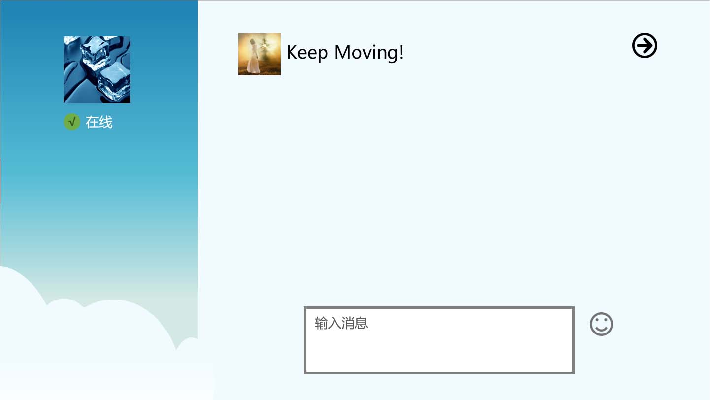
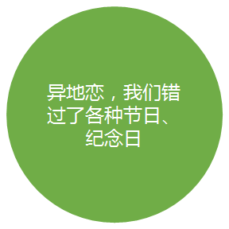
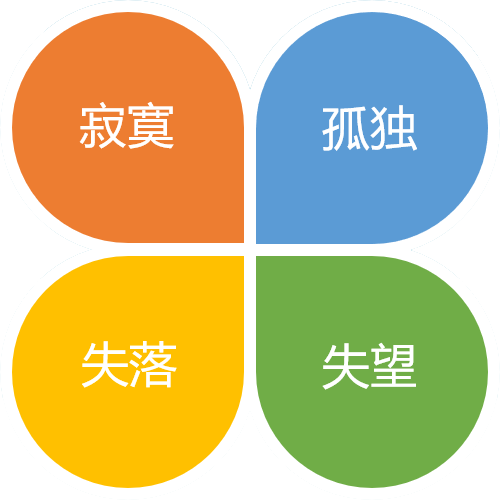
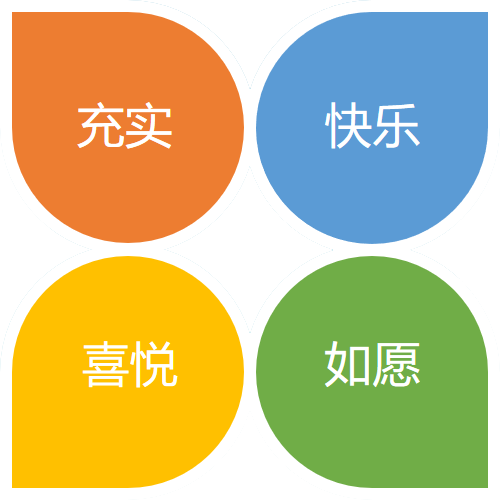

马明杰 ❤ 霍兴瑞 一生一世
空格键或者滑动屏幕开始倾听我的表白
空格键或者滑动屏幕开始倾听我的表白

在手机上互道晚安
是我们异地100天养成的习惯
不知不觉
我们已经历了100天的异地恋
100个日夜
都在苦苦思念着对方的音容相貌
致我们的异地恋
夜晚
思念
的同时
请相信对方也在 思念……
请相信对方也在 思念……

最常的
过节
方式，可能就是给对方打个
电话
……
当我们分开时

当我们重逢时

所以每次见面的时候，都想以
光的速度
出现在你面前
我们往来于不同的城市，
每一次见面都是那么弥足珍贵
而每次分别，
也都是那么难分难舍……
每一次见面都是那么弥足珍贵
而每次分别，
也都是那么难分难舍……
我们之间的感情信号，也并不总是满格
给信心充满电，让我们的心灵时刻连通
我们最终
一定
会迎来那道我们自己的
彩虹
过去的小明一直是一个人生活，享受着孤独，也憧憬着爱情。
一个人的长廊
一个人的山岗
一个人的地铁
一个人的游乐场
但他依然乐观，微笑着，等待着
生活难免有风风雨雨
他总是能够轻松的应对
并且面带阳光、自信的笑容
生活也不会总是一帆风顺
但他每次都能勇敢的面对
随时准备接受生活的挑战
随时准备接受生活的挑战
可是小明的爱情又在哪里呢？
在镜子里面吗？他不敢相信
他去问大树，我的爱情在哪里？
大树告诉他，也许就在不远的地方
大树告诉他，也许就在不远的地方
于是，小明一个人继续向前走
走在茫茫的雪地上
走在茫茫的雪地上
直到有一天，小明与小红相遇了！
小明喜欢小红，因为小红的出现，小明脸上有了更加灿烂的笑容
可是小红会喜欢小明吗？
终于有一天，小明鼓起了勇气
小明好高兴
每天小明都会去找小红
然后两个人一起出去玩
晚上小明会把小红送回家
直到很晚
小明才会一个人回家
小明才会一个人回家
然后高兴地进入梦乡，希望梦到小红
小明很快就成为了小红的逛街助手
小明和小红一起去了好多地方玩
小明也和小红一样成为了一个吃货
后来，他们搬到了一起
于是小明开始学习新的技能
煮饭
每天早上，他们吃着自己做的美食
然后在同一个站台，高高兴兴的一起上班
小明感觉自己好幸福。
因为自己有了家
那个有小红在的地方
因为自己有了家
那个有小红在的地方
他们偶尔也会吵架
小明不想这样
一定是我有什么做的不对，小明在想
如果没有小红在身边，窗外就没有风景
如果没有小红在身后
小明又怎会飞的更高更远
小明不想这样。他要为小红改变自己
小红说她喜欢狮子座的人，于是小明许下愿望
小红说她喜欢狮子座的人，于是小明许下愿望
我愿为你变成狮子座
爱情就像花草一样
需要用包容来浇灌
需要用包容来浇灌
再到后来，小红要过生日了
小明开始为小红准备礼物
小明开始为小红准备礼物
看 小 因 开
着 明 为 心
礼 好 他 的
物 开 想 样
一 心 象 子
件 着
件 小
准 红
备 收
好 到
了 礼
物
时
着 明 为 心
礼 好 他 的
物 开 想 样
一 心 象 子
件 着
件 小
准 红
备 收
好 到
了 礼
物
时
想 小 因 去
想 明 为 全
后 好 可 世
面 开 以 界
还 心 和 好
有 小 多
一 红 地
辈 方
子 玩
想 明 为 全
后 好 可 世
面 开 以 界
还 心 和 好
有 小 多
一 红 地
辈 方
子 玩
小明也会继续努力
为了他和小红的梦之城堡
为了他和小红的梦之城堡
后来的一天，小红说她不敢坐山车了，于是小明就带她到别的地方玩。这只
是他们幸福生活中的一件小事，小到无法引起别人的注意。可这是属于小明
和小红的幸福生活。
是他们幸福生活中的一件小事，小到无法引起别人的注意。可这是属于小明
和小红的幸福生活。
小红：永远有多远？
小明：比时间多一秒就是永远，我会永远爱你
小红：世界有多大？
小明：你走到哪里，世界就有多大
小明：比时间多一秒就是永远，我会永远爱你
小红：世界有多大？
小明：你走到哪里，世界就有多大
愿得一人心，白首不相离
纪念日快乐

小明和小红的故事会一直继续下去。
无论精彩、平淡都会是他们喜欢的。
-- 按“Esc"键查看预览
无论精彩、平淡都会是他们喜欢的。
-- 按“Esc"键查看预览